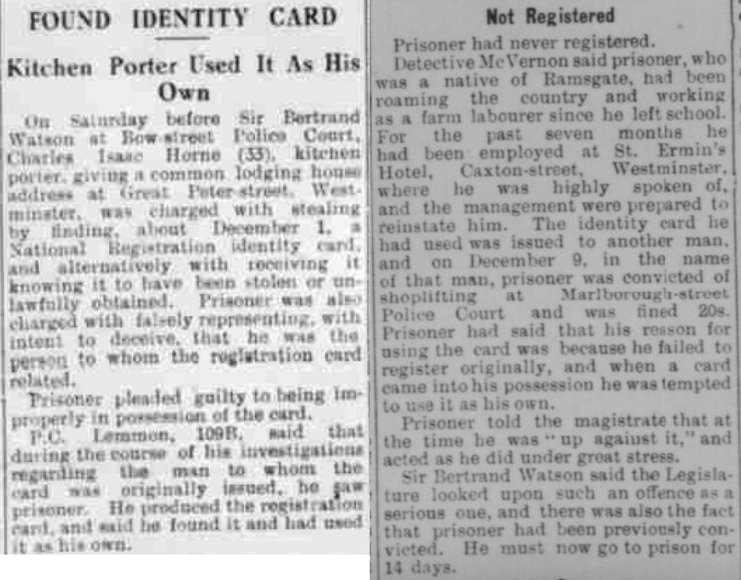
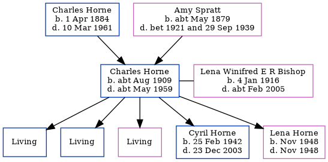

Charles Isaac Horne cAug 1909 - c1959
[ Home ] | [ Calendar ] | [ Surnames Index ] | [ Errors ] | [ Family History ]A kitchen porter and the child of Charles Horne (a market gardener worker) and Amy Spratt, Charles Horne, the first cousin once-removed on the father's side of Nigel Horne, was born in Haine, Kent, England c. Aug 19091,2,3 and married Lena Winifred E R Bishop (with whom he had 5 children: Michael C, Bernard D, Patricia B, Cyril Francis and Lena Winifred, along with 3 surviving children) in Thanet, Kent, England around Nov 19345.
During his life, he was living at Walnut Tree Cottages, Haine in Thanet on 2 Apr 19117; at Sackettshill Farm, St Peters in Thanet on 19 Jun 19218; and at Great Peter Street, Westminster, London, England in 19426.
He died c. May 1959 in West Ham, London, England4.
Parents
- Charles Henry was born on 1 Apr 1884
- Amy was born c. May 1879
Children
- Cyril Francis was born on 25 Feb 1942
- Lena Winifred was born in Nov 1948
Citations
- 1911 England Census Online publication - Provo, UT, USA: Ancestry.com Operations, Inc., 2011.Original data - Census Returns of England and Wales, 1911. Kew, Surrey, England: The National Archives of the UK (TNA), 1911. Data imaged from the National Archives, London, England.
- England & Wales births 1837-2006 - Findmypast
- England & Wales, FreeBMD Birth Index, 1837-1915 Online publication - Provo, UT, USA: The Generations Network, Inc., 2006.Original data - General Register Office. England and Wales Civil Registration Indexes. London, England: General Register Office. © Crown copyright. Published by permission of the Cont
- England & Wales deaths 1837-2007 - Findmypast
- England & Wales, Marriage Index: 1916-2005 Online publication - Provo, UT, USA: The Generations Network, Inc., 2009.Original data - General Register Office. England and Wales Civil Registration Indexes. London, England: General Register Office. © Crown copyright. Published by permission of the Cont
- Chelsea News and General Advertiser - 21 Aug 1942
- 1911 Census for England & Wales - Findmypast (was age 1 and the son of the head of the household)
- 1921 Census Of England & Wales - Findmypast (was age 11 and the son of the head of the household)
Media
Chelsea News and General Advertiser - 21 Aug 1942

England & Wales marriages 1837-2008 Transcription - BMD-M-1934-4-AZ-000109-053
England & Wales deaths 1837-2007 Transcription - BMD-D-1959-2-AZ-000467-111
England & Wales marriages 1837-2008 Transcription - BMD-M-1934-4-AZ-000622-041
1911 England, Wales - GBC-1911-RG14-04511-0115-3
1911 England, Wales & Scotland Census Transcription - GBC-1911-RG14-04511-0115-4
1921 Census of England & Wales - GBC/1921/RG15/04458/0431/03
Family Tree
Map
Generated by ged2site. Last updated on Jul 3, 2024
Known Issues
Location for 19 Jun 1921 (Sackettshill Farm, St Peters, Thanet, Kent, England) differs from mother's (Sackettshill Farm, Thanet, Kent, England)
19 Jun 1921: Not living with either parent in childhood when aged 12
Listed in the residence for 1942, but spouse Lena Winifred E R Bishop is not
1939 UK register information missing